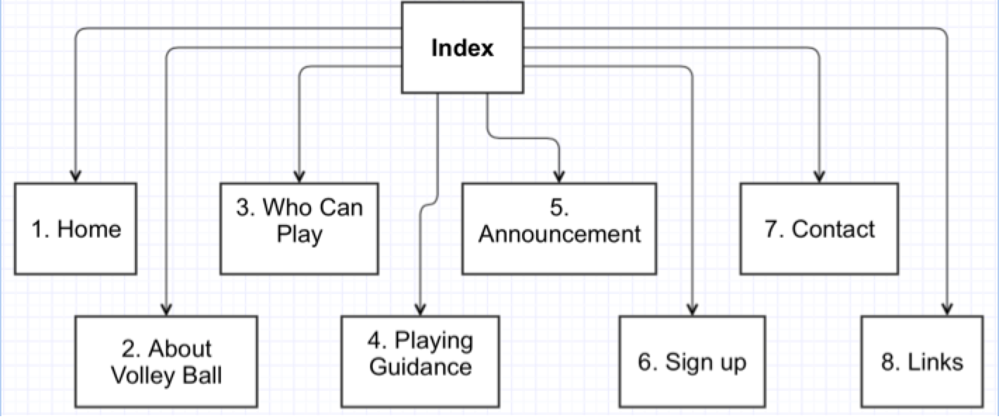

Name:Hyunjin Kim
Login: jc343368
The Diggers Beach Volleyball site is aiming for increasing revenue on Diggers Beach Volleyball by making websites and offering more services and news through the website, so that they can collecting more members including current members.
There are going to be consistent improvement and quick update for Diggers Beach Volleyball site for three months. Then we are going to compare the total revenue of the Diggers Beach Volleyball and total members of Diggers Beach Volleyball between before 3 months we make the site and after 3 months we make the site.
Mostly from 35 to 50 years old players are main customer of the Diggers Beach Volleyball, but this site is intended for collecting more members from high school students and young adults.
